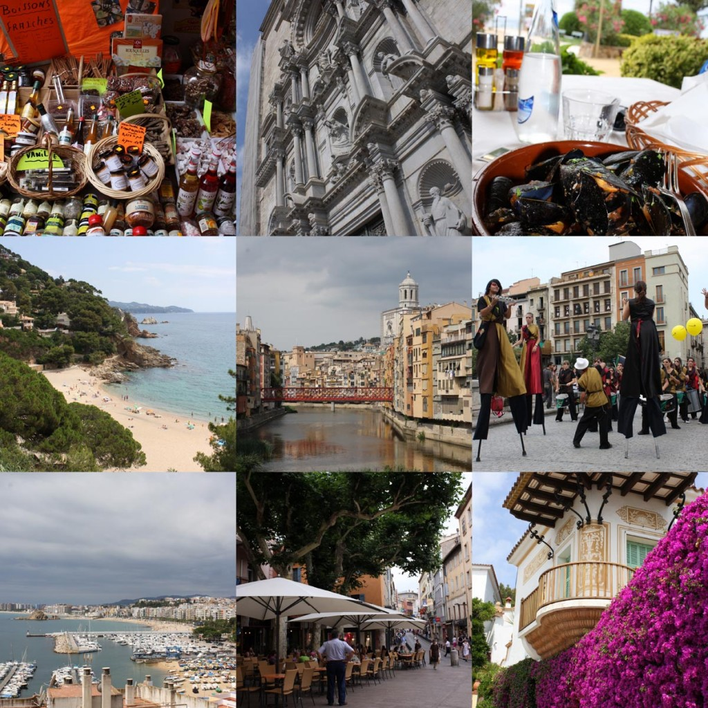

In hindsight, the trip to Barcelona, Costa Brava, Perpignan and Girona turned out well. I ate and drank myself silly because the food is so good, the architecture is amazing in Barcelona and I found my Costa Brava was a quiet beautiful part of the Catalan region.
Gorging on tapas, sangria and waffles with chocolate sauce, Barcelona is kaleidoscope of Gaudis and Picassos, Costa Brava is white sand clear water and apartments, Girona is a scenic small town with a big church and red bridge, Perpignan is a cool little town, also where Picasso and his mistress ran away to escape her husband and his mistress who was also having an affair with someone else! what an adulterous couple! haha.. It also has a big old castle of the Kings of Majorca 
Enjoy the pics, tells more than I can in this email 
Shi
ps: everything looks good in hindsight  heehee
heehee